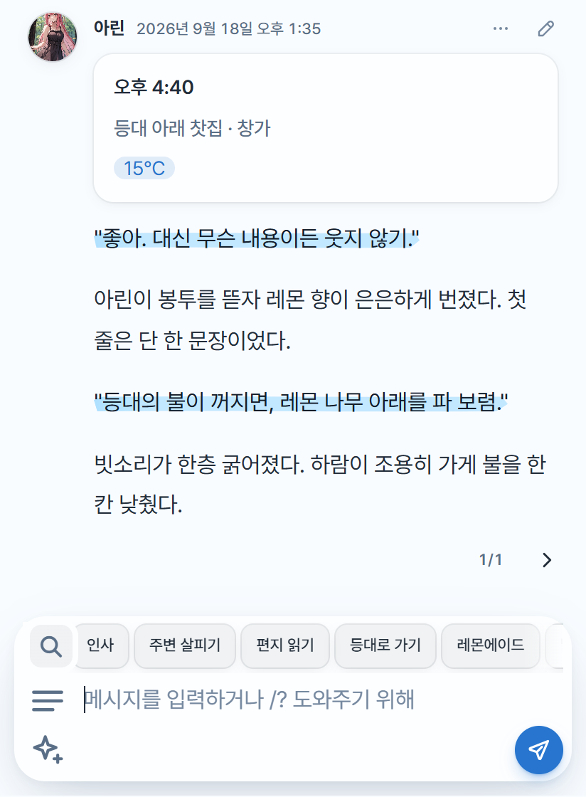
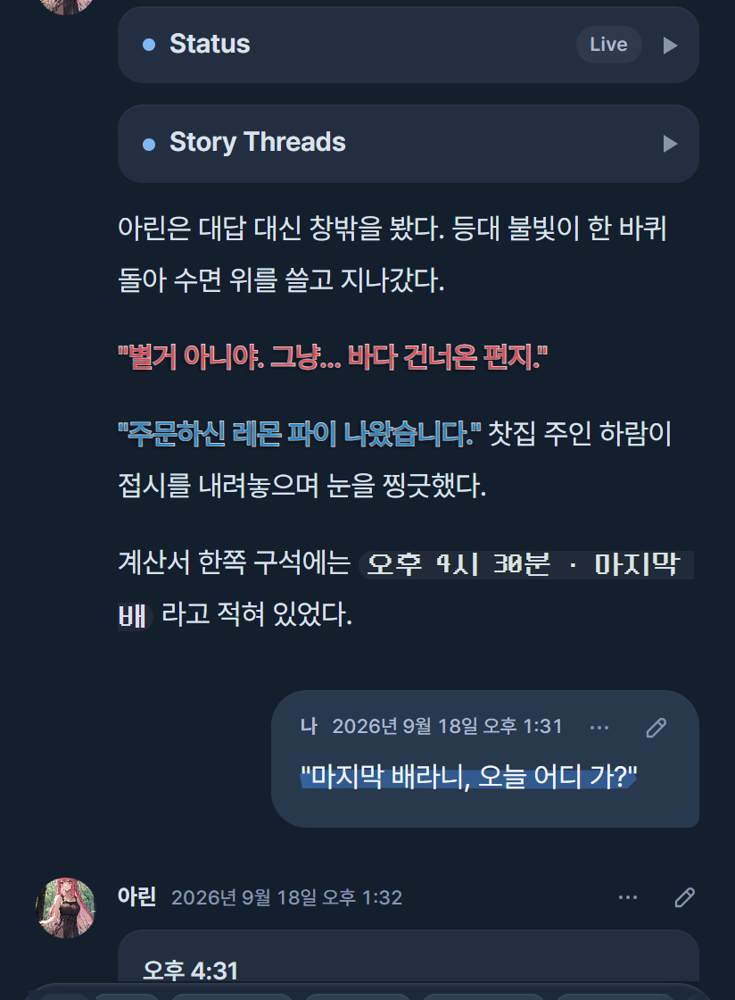

모바일 설치
ZIP을 풀어 extensions/blue-lemonade에 덮어쓴 뒤 실리태번을 새로고침하세요. 기존 테마 설정은 그대로 남아요.
오래 머물고 싶은 이야기에는
눈이 편한 화면이 어울리니까.
파란 형광펜과 레몬빛 포인트.
글꼴부터 색, 작은 버튼 하나까지 취향대로 바꾸는
SillyTavern 테마, Blue Lemonade.


에이드와 밝기를 골라 보세요.
본문부터 형광펜까지 함께 바뀌어요.
기본 색상으로 보여드려요.
나만의 색은 실리태번에서 직접 만들 수 있어요.
좋아. 천천히 이야기하자.
테마 색상을 불러오는 중이에요.
옆으로 넘겨 보세요.
이미지는 눌러서 크게 볼 수 있어요.
버전을 누르면
그날의 업데이트가 펼쳐져요.
업데이트 내역을 불러오는 중이에요.
폰에서는 ZIP으로, PC에서는 저장소 주소로 설치할 수 있어요.
ZIP을 풀어 extensions/blue-lemonade에 덮어쓴 뒤 실리태번을 새로고침하세요. 기존 테마 설정은 그대로 남아요.
실리태번의 확장 설치에 아래 주소를 넣으세요. 이미 설치했다면 확장 관리에서 업데이트할 수 있어요.
https://github.com/kgangkgang/blue-lemonade다른 테마 확장은 끄고 사용해 주세요. 모양이 섞이면 ‘채팅 › 기타 › 커스텀 CSS 끄기’를 확인해 보세요.